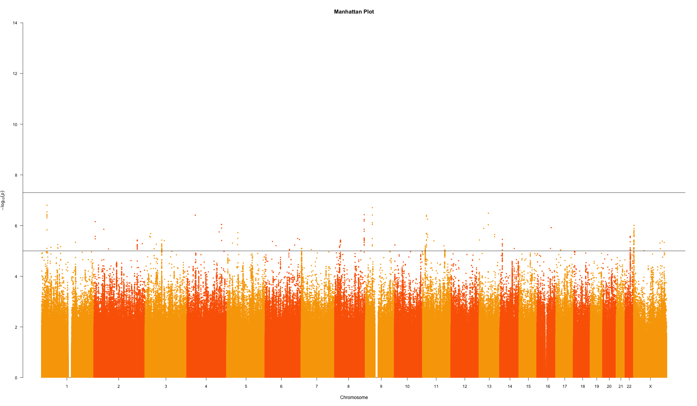

<!DOCTYPE html>
<html>
    <head>
        <meta charset="utf-8">
        <title>ESHG - Genetics of healthcare costs</title>
        <link href="https://cdn.jsdelivr.net/npm/bootstrap@5.0.2/dist/css/bootstrap.min.css" rel="stylesheet" integrity="sha384-EVSTQN3/azprG1Anm3QDgpJLIm9Nao0Yz1ztcQTwFspd3yD65VohhpuuCOmLASjC" crossorigin="anonymous">
    </head>
</html>
<style>
    h1 {text-align:center;}
    p {
        text-align: justify;
        margin-left: 100px;
        margin-right: 100px;
    }
    h2 {
        margin-left: 100px;
        margin-right: 100px;
    }

    h3 {
        margin-left: 100px;
        margin-right: 100px;
    }

    h4 {
        margin-left: 100px;
        margin-right: 100px;
    }

    .center {
        display: block;
        margin-left: auto;
        margin-right: auto;
        width: 50%;
    }

</style>
<body>
    <h1>Genetics of healthcare cost - genCOST consortium</h1>
    <h4>ESHG conference 2023</h4>
    <p><big>Giannos (Ioannis) Louloudis, Uploaded 09/06/2023</big></p>

    <hr>

    <h2>Data description</h2>
    <h3>Danish National Patient Registry</h3>
    <p>
        The Danish National Patient Registry (DNPR) was established in 1976 and tracks activity at Danish hospitals. 
        The registry contains data on which diseases the patients have (through ICD codes), how these conditions were treated,
        which hospital they have visited, time of admission, time of discharge, etc. 
        Additionally the registry includes all patient information such as place of residence, sex, age.
        There is a specialized version of DNPR, which contains the Diagnosis-Related Groups (DRG) that are used to track
        billing information by the hopsitals.
        In Denmark the healthcare system is public, thus the reimbursement is provided by the state.
    </p>
    <p>
        DRGs were initially introduced in the 1980s as a means to standardize and streamline the payment process for Medicare patients 
        in the United States. 
        The goal was to classify patients into groups based on their diagnoses, procedures performed, age, and other relevant factors. 
        This grouping allowed for a more consistent and transparent approach to healthcare reimbursement.
        The classification of patients into DRGs is typically based on information gathered from medical records, 
        such as primary diagnosis, secondary diagnoses, procedures performed, and patient demographic data. 
        Each DRG is assigned a specific payment weight, which is used to calculate the reimbursement amount for the healthcare
         services provided to the patient.
         While initially developed for Medicare reimbursement, DRGs have been adopted by many other countries 
         and health insurance systems worldwide. 
         However, it's important to note that the specific grouping criteria and payment weights may vary between
         different countries and healthcare systems.
    </p>


    <h3>Copenhagen Hospital Biobank</h3>
    <p>
        The Copenhagen Hospital Biobank (CHB) was established to enable researchers' access to a large resource of well-defined 
        patient samples. The biobank uses leftover EDTA whole blood from samples drawn for type testing or red cell antibody screening,
        which are estimated to be carried out for approximatelly 25% of all hospitalized inpatients and outpatients at Danish 
        hospitals. The CHB has been running since <strong>2009</strong> and currently holds <em>~450,000</em> unique patients.
        If you want more information on the Copenhagen Hospital Biobank, you can have a look at the article:
         <a href="https://academic.oup.com/ije/article/50/3/719/5965137?login=true"><em>Sorensen et al., 2021</em></a>.
    </p>
    <p>
        CHB is split amongst several different protocols with different permission requirements. Some examples are the 
        cadiovascular disease cohort (CVD), and the degenerative and neuromuscular disease cohort (DEGEN).
        The one used to carry out this project was the DEGEN protocol which consists of approximatelly 200,000 individuals.
    </p>

    <hr>

    <h2>Phenotype extraction</h2>
    <p>
        Starting with DNPR we collected all inpatients/outpatients between years 2005 and 2017. For a patient to be included 
        they must have had at least 5 years of follow-up, so the latest a new patient could be introrduced in our study was 2013.
        The costs of patients were summed across all years and the phenotype of <strong>annual healthcare costs</strong> we calculated
        based on the following formula:
    </p>
    
    <p>
        At this point we checked for the number of individuals with genetic data stored in the DEGEN protocol of the CHB and 
        identified ~210k patients we could use for the analysis. Patients were stratified into five different age strata and 
        also based on sex. This left us with the following strata:
    </p>
    <table class="center">
        <tr>
            <th>Stratification</th>
            <th>Number of individuals</th>
        </tr>
        <tr>
            <td>All patients</td>
            <td>208,624</td>
        </tr>
        <tr>
            <td>Female patients</td>
            <td>113,577</td>
        </tr>
        <tr>
            <td>Male patients</td>
            <td>95,047</td>
        </tr>
        <tr>
            <td>Ages 5-18</td>
            <td>293</td>
        </tr>
        <tr>
            <td>Ages 19-35</td>
            <td>33,345</td>
        </tr>
        <tr>
            <td>Ages 36-55</td>
            <td>52,010</td>
        </tr>
        <tr>
            <td>Ages 56-75</td>
            <td>75,706</td>
        </tr>
        <tr>
            <td>Ages 76+</td>
            <td>47,270</td>
        </tr>
    </table>

    <p>
    For each of the strata we calculated the residuals of a linear regression using age, age-squared, year-of-birth, sex as
    covariates. For the female and male strata sex was not used as a covariate.
    The residuals were then normalized using inverse rank normalization and a GWAS was run for each of the strata.
    In the GWAS we added the first 20 principal components as covariates.
    </p>

    <hr>
    
    <h2>Results</h2>
    <h3>Genome-Wide Association Study</h3>
    <h4 style="text-align: center;"> All patients manhattan plot</h4>
    
    <br>

    <h4 style="text-align: center;"> Female patients manhattan plot</h4>
    
    <br>

    <h4 style="text-align: center;"> Male patients manhattan plot</h4>
    
    <br>

    <h4 style="text-align: center;"> Ages 5 - 18 manhattan plot</h4>
    
    <br>

    <h4 style="text-align: center;"> Ages 19 - 36 manhattan plot</h4>
    
    <br>

    <h4 style="text-align: center;"> Ages 35 - 55 manhattan plot</h4>
    
    <br>

    <h4 style="text-align: center;"> Ages 56 - 75 manhattan plot</h4>
    
    <br>

    <h4 style="text-align: center;"> Ages 76+ manhattan plot</h4>
    
    <br>    

    <h3>Phenome-Wide Association Studies</h3>
    <p>
         A phenome-wide association study (PheWAS) was used to extract associations between the top GWAS hits and the other
         phenotypes recorded in the <em>DEGEN</em> cohort. 
         The PheWAS was run using our inhouse pipeline connected with the CHB. 
         We explored putative associations amongst the top hits from each GWAS and a total of 1,275 phenotypes which were 
         available for the DEGEN protocol.
    </p>
    <p>
        An example of the PheWAS manhattan plot for the top hit in the whole population GWAS is shown in the figure below.
        This SNP has been found to have strong association with <em>alcoholic liver damage, type 2 diabetes & tobacco use disorder</em>,
        which are all conditions that could lead to repeated hospitalizations over years and thus have high cost in the 
        healthcare system.
    </p>
    <h4 style="text-align: center;">PheWAS manhattan plot of top SNP</h4>
    
    <br>

    <h3>Sexual dimorphism in effect size</h3>
    <p>
        We collected the most significant hits from the GWASs on the female and male strata and compared their effect sizes.
        Two loci from the female strata showed strong association in effect size difference with the male patients. 
        The loci have been highlighted as light green in the Miami plot below (female patients: darker colours, male patients: lighter colours).
    </p>
    <h4 style="text-align: center;"> Miami plot</h4>
    

    <hr>
    <h3>Contributions</h3>
    <p>
        This project is a collaborative effort of the Brunak group from the Novo Nordisk Foundation Center for Protein Research and Denmark Statistics as 
        part of the genCOST consortium. The main contributors are: Giannos (Ioannis) Louloudis, Hannah Currant, Thomas Folkman, Laust Mortensen, Søren Brunak.
    </p>
    <p>
        <big>Contact info:</big><br>
        Giannos (Ioannis) Louloudis <br>
        e-mail: <a href="">ioannis.louloudis@cpr.ku.dk</a>
    </p>
</body>
